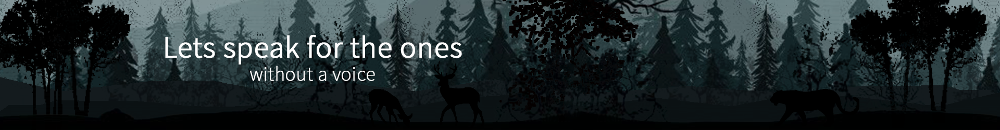
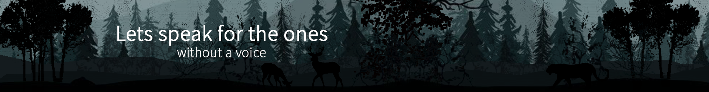

For e.g. when the Dodos went extinct in Mauritius, one species of Acacia tree stopped regenerating completely. So when a species goes extinct, it leaves behind a scar, which affects the entire ecosystem.
Tigers is a unique animal which plays a pivotal role in the health and diversity of an ecosystem. It is a top predator which is at the apex of the food chain and keeps the population of wild ungulates in check, thereby maintaining the balance between prey herbivores and the vegetation upon which they feed.